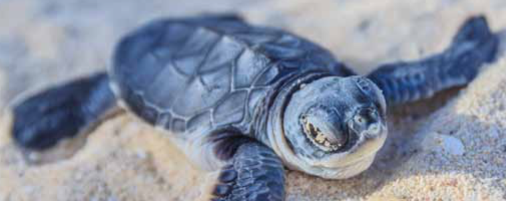

Marokko familierejse
Rundrejsen er tilrettelagt med tre opholdssteder. På dagsture oplever I tidligere kongebyer, hvor man fornemmer landets historiske dybde, kommer til Sigiriya, hvor Kong Kasyapa byggede sin særprægede løveborg på en klippetop. I bor bl.a. i det smukke Kandy, den gamle kongeby med Tandens Tempel. I besøger kokosplantager og hører om teproduktion, I besøger en camp for elefantunger, der er kommet til skade i naturen og som genoptrænes for at de igen kan klare sig. Rejsen slutter ved stranden, hvor I kan observere blåhvaler.